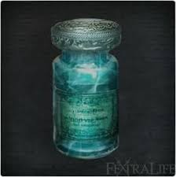
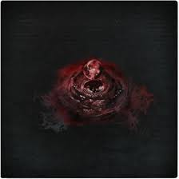
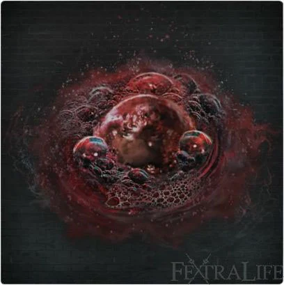
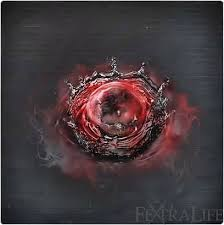
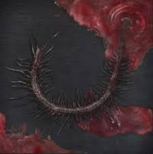

|
Item Name |
Description |
 |
Antidote |
Small medicinal tablets that counteract poison.
Used to treat ashen blood, the baffling sickness that ravaged
Old Yharnam long ago.
These tablets only provide short-term relief. The ashen blood
ailment eventually triggered the spread of the beastly
scourge. |
 |
Arianna’s Third Umbilical Cord |
A great relic, also known as the Cord of the Eye. Every
infant Great One has this precursor to the umbilical cord.
Every Great One loses its child, and then yearns for a surrogate, and Oedon, the formless
Great
One, is no different. To think, it was corrupted blood that began this eldritch liaison.
Use to gain Insight and, so they say, eyes on the inside, although no one remembers
what that
truly entails. |
 |
Beast Blood Pellet |
Large medicinal pellets, supposedly formed of coagulated
beast blood. Banned by the Healing Church due to
their unclear origin. Grants a spurt of beasthood.
Ripping apart the flesh of one's enemies and being
rained upon by their splattering blood invigorates
one's sense of beasthood, feeding strength and
euphoric feeling alike. |
 |
Blood Vial |
Special blood used in ministration.
Restores HP.
Once a patient has had their blood ministered, a unique but
common treatment in Yharnam, successive infusions recall
the first, and are all the more invigorating for it.
No surprise that most Yharnamites are heavy users of blood. |
 |
Blood of Adeline |
Blood taken from Adeline, patient of the research hall.
Restores HP, and continues to rejuvenate HP for some time.
Adeline was originally one of the Blood Saints who received
treatment by the Church to cultivate worthy blood. Adeline's
was one of the few cases that turned out favorably. |
 |
Blood of Adella |
Blood taken from Adella, nun of the Healing Church.
Restores an amount of HP, then continues to gradually
restore HP for a short time.
The Healing Church nuns are chosen for their merit as
vessels for blood, and groomed as Blood Saints.
The mere chance of being treated with their blood lends
legitimacy to the Healing Church and communion. |
 |
Blood of Arianna |
Blood taken from Arianna, Cathedral Ward woman of
pleasure. The sweet blood of Arianna restores HP, and
temporarily speeds stamina recovery.
A member of the old Healing Church would know that her
blood is similar to precisely what was once forbidden. |
|  |
Blue Elixir |
Dubious liquid medicine used in strange experiments
conducted by high ministers of the Healing Church.
A type of anesthetic that numbs the brain.
Hunters, able to retain consciousness by force of will, make
use of a secondary effect of the medicine, which dilutes their
presence while standing still. |
 |
Bold Hunter’s Mark |
Dubious liquid medicine used in strange experiments
conducted by high ministers of the Healing Church.
A type of anesthetic that numbs the brain.
Hunters, able to retain consciousness by force of will, make
use of a secondary effect of the medicine, which dilutes their
presence while standing still. |
|  |
Coldblood Dew |
Droplet of coldblood containing Blood Echoes.
Use to gain Blood Echoes.
Hunters sustained by the dream gain strength from Blood
Echoes. They imbibe the blood with thoughts of reverence,
indeed gratitude, for their victims. |
|  |
Frenzied Coldblood |
A rich droplet of coldblood containing Blood Echoes.
Use to gain frenzied Blood Echoes.
This manifestation of madness comes from a mind teetering
on the very brink, but has a sane mind ever produced
anything of true significance? |
 |
Great One Coldblood |
Relic containing the Blood Echoes of a Great One.
Use to gain cosmically nightmarish Blood Echoes.
Like a true revelation, this uncanny relic defies |
 |
Great One’s Wisdom |
Fragments of the lost wisdom of the Great Ones, beings that
might be described as gods.
Use to gain Insight.
At Byrgenwerth, Master Willem had an epiphany:
"We are thinking on the basest of planes. What we need, are
more eyes." |
 |
Hunter’s Mark |
Dangling, upside-down rune etched in one's mind.
Symbol of a hunter.
By focusing one's thoughts on this rune, a hunter
loses all Blood Echoes, but awakens afresh,
as if it were all just a bad dream. |
 |
Iosefka’s Blood Vial |
Blood vial acquired from Iosefka's clinic.
This refined blood, highly invigorating,
restores a larger amount of HP.
The product of a slow and careful refinement process,
this rare blood vial appears to be a clinic original. |
 |
Kin Coldblood |
Coldblood of inhuman kin of the cosmos, brethren of the
Great Ones.
Use to gain unspeakable Blood Echoes.
Dare not to delve into the world beyond humanity, the
eldritch Truth touched upon long ago at Byrgenwerth. |
 |
Lead Elixir |
A heavy, syrupy liquid medicine.
Temporarily shifts weight to make deflection of attacks
easier, but must be used with care, as it also slows
movement with no change to defense.
Its recipe for this mysterious concoction is unknown, but
some postulate that it materializes only within the most
desperate nightmares. |
 |
Madman’s Knowledge |
Skull of a madman touched by the wisdom of
the Great Ones.
Use to gain Insight.
Making contact with eldritch wisdom is a blessing,
for even if it drives one mad,
it allows one to serve a grander purpose, for posterity. |
 |
Mergo’s Third Umbilical Cord |
A great relic, also known as the Cord of the Eye. Every infant
Great One has this precursor to the umbilical cord.
Every Great One loses its child, and then yearns for a surrogate. This Cord granted
Mensis
audience with Mergo, but resulted in the stillbirth of their brains.
Use to gain Insight and, so they say, eyes on the inside, although no one remembers
what that
truly entails. |
 |
Revered Great One Coldblood* |
Relic containing the blood echoes of a revered Great One.
Use to gain cosmically nightmarish Blood Echoes.
Like a true revelation, this uncanny relic defies
understanding
*Has not been found through normal means |
 |
Sedatives |
Liquid medicine concocted at Byrgenwerth.
Calms the nerves.
Those who delve into the arcane fall all-too-easily
to madness, and thick human blood serves to calm
the frayed nerves of these inquisitive minds. Naturally,
this often leads to a reliance on blood ministration. |
 |
Tear Stone |
Silver-shining tear stone.
Use to change into a droplet blood gem that fortifies any
weapon.
A doll sheds neither blood nor tears, and thus its nature
remains unknown. |
|  |
Thick Coldblood |
A thick droplet of coldblood containing Blood Echoes.
Use to gain a larger amount of Blood Echoes.
A strong will produces thick blood. Doubtless, the product of
obsession, a potent source of human strength. |
|  |
Vermin |
A centipede-like creature discovered on successful hunts by
League hunters.
Vermin, found hidden within filth, are only seen by League
confederates, and are the root of man's impurity. The League
has assumed the task of finding and crushing all vermin.
Perhaps there is some mercy in the madness. Those who
wish to see vermin can, and those who choose to are
provided with boundless purpose. |
 |
Workshop Third Umbilical Cord |
A great relic, also known as the Cord of the Eye. Every
infant Great One has this precursor to the umbilical cord.
Every Great One loses its child, and then yearns for a surrogate. The Third Umbilical
Cord
precipitated the encounter with the pale moon, which beckoned the hunters and conceived
the
hunter's dream.
Use to gain Insight and, so they say, eyes on the inside, although no one remembers
what that
truly entails. |
 |
“Iosefka’s” Third Umbilical Cord |
A great relic, also known as the Cord of the Eye. Every
infant Great One has this precursor to the umbilical cord.
Provost Willem sought the Cord in order to elevate his being and thoughts to those
of a Great
One, by lining his brain with eyes. The only choice, he knew, if man were to ever
match Their
greatness. |